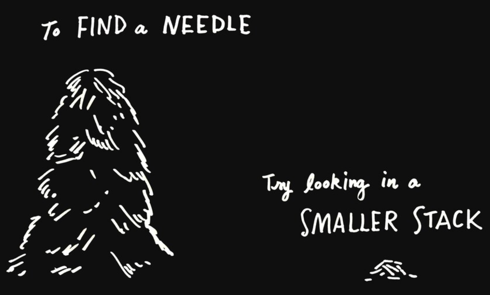

# A named vector
x <- c(a = 1, b = 3, c = 5)
# Index by position
x[1]
x[1:2]
x[c(1, 3)]
# Index by name
x["a"]
x[c("a", "c")]
# Index by logic
x[x > 3]
x[names(x) == "b"]Week 5 - Troubleshooting
Student learning objectives
Use indexing by position, logic, and name to subset data in vectors (review of week 2 material)
Diagnose bugs by creating a minimum reproducible example
Explore the state of your R environment using the debugger
Indexing and subsetting vectors
Review of Week 2. Begin by creating a new project for Week 5.
Atomic vectors and lists
Atomic vectors = basic building blocks. Character, double, integer, and logical.
Lists = complex combinations of atomic vectors and other lists.
Take-home message: just about everything in R is either a list or a function.
Things that are secretly lists:
data.framesmodels e.g.,
lm(y ~ x)plots e.g.,
ggplot(dat, aes(x, y)) + geom_point()
Indexing by position, logic, and name
There are three ways to subset a vector using an index: by position, logic, and name. Use [] to subset a vector.
Exercises
Use the following code to answer questions Q1 - Q3.
plant_height_mm <- c(p0 = 45.94, p1 = 48.13, p2 = 48.14, p3 = 47.55, p4 = 43.85, p5 = 45.12, p6 = 45.49, p7 = 44.82, p8 = 48.4, p9 = 46.62)
plant_species <- c("Arabidopsis thaliana", "Arabidopsis arenosa", "Arabidopsis lyrata", "Arabidopsis arenosa", "Arabidopsis arenosa", "Arabidopsis arenosa", "Arabidopsis lyrata", "Arabidopsis thaliana", "Arabidopsis thaliana", "Arabidopsis thaliana")Q1: Match the following lines of code to indexing by position, logic, and name.
plant_height_mm[plant_species == "Arabidopsis thaliana"]
plant_height_mm[c("p0", "p9", "p10")]
plant_height_mm[7:10]Q2: Fill in the blanks to (1) subset plant_height_mm where species is Arabidopsis arenosa and (2) subset plant_height_mm where species isn’t Arabidopsis thaliana.
# (1)
plant_height_mm[___ == "___"]
# (2)
___[___ ___ "Arabidopsis thaliana"]Q3: Subset plant_species where the plant height was more than a standard deviation greater than the mean.
Recall that the columns of data frames are vectors, too. That means indexing and subsetting works with data frame columns. Answer questions Q4 - Q6 about indexing data frame columns.
# install.packages("palmerpenguins") <- run this first if necessary
library(palmerpenguins)
female_bill_length_mm <- penguins$bill_length_mm[!is.na(penguins$sex) & penguins$sex == "female"]Q4: In the code chunk above, what vector are we subsetting? Are we indexing by position, logic, or name?
Q5: Use the seq() function to subset every 10th element of the island column in penguins. Is this subsetting by position, logic, or name? Hint: use the from, to, and by parameters of seq().
Q6: Fill in the code chunk below to find the mean of the five largest bill lengths by species (big_bill). Then add another argument to summarize to create lil_bill, which should be the mean of the five smallest bill lengths. Hint for calculating lil_bill: combine length() and : to index by position.
penguins %>%
drop_na(bill_length_mm) %>%
group_by(species) %>%
arrange(desc(bill_length_mm)) %>%
summarize(big_bill = mean(___[___]))Subsetting lists
Subsetting lists is a little different than subsetting atomic vectors because you lose the guaranteed type consistency. All elements of an atomic vector are the same type, but a list can contain all sorts of things.
As with atomic vectors, you can index lists by position, logic, and name using []. But be careful: [] always returns another list. This is a really common error:
# You start with a list
l <- list(a = 1:3,
b = 4:6)
# You want the mean of the first element, so you index by position
mean(l[1])Warning in mean.default(l[1]): argument is not numeric or logical: returning NA[1] NAAs the warning states, mean() only works on numeric or logical atomic vectors. Even though the first element of l is a numeric atomic vector, l[1] is not an atomic vector. This is because [] always returns another list when subsetting lists. So l[1] is still a list, it just contains the atomic vector 1:3.
You can reach inside lists to access their contents using $ (name) or [[]] (name or position).
mean(l$a)
mean(l[["a"]])
mean(l[[1]])Notice that $ doesn’t need you to put the name in quotes but [[]] does. So when you’ve used $ to access columns in data frames, you’re pulling the contents out of a list element by name.
# First ten penguin species
penguins$speces[1:10][[]] is preferable to $ when you need to use a variable to decide what contents you want.
my_element <- "a"
# This doesn't work
l$my_element
# This does
l[[my_element]]Exercises
Use the code below to answer questions Q7 - Q9 about subsetting and indexing lists.
set.seed(1001)
# A linear regression model
l <- list(x = 1:10,
y = 2 * x + rnorm(10, sd = 2),
coef = c(intercept = 1.326, slope = 1.635))Q7: What type of indexing is used in the call to plot() to get the x- and y-axis values?
Q8: Estimate the predicted values of y using coef.
- How will you subset
x?[],[[]], or$. - How will you subset the intercept and slope? Hint: you’ll need to combine list subsetting and vector subsetting!
- Apply the formula \(y = mx + b\) to estimate predicted
y.
Q9: Create a plot by filling in the blanks in the following code.
predicted_y <- ___ # Your answer to Q8 goes here
plot(___, ___) # Create a scatter plot of x and y (from l)
lines(___, ___, col = "red") # Add a line with the model predictions (observed x and predicted y)Debugging
Minimum reproducible example
The small working example Jenny Bryan is talking about here is called a minimum reproducible example, or a reprex for short. Distilling a bug into the smallest amount of data and code that produces the bug is the single most valuable skill for debugging! Creating a reprex will often lead you directly to the source of the bug, and if it falls short of that it will at least narrow things down for other people to help you.
Note
This lesson draws heavily from Jenny Bryan’s 2020 rstudio::conf presentation Object of type ‘closure’ is not subsettable
Before we begin, install and load the reprex package.
install.packages("reprex")
library(reprex)A reprex has to be two things: reproducible and minimal. The reprex package will ensure your example is reproducible. You, the scientist, have to figure out minimal using your judgement.
Reproducible
reprex() will create a reproducible example of some code for you and format the output so you can share it over GitHub, StackOverflow, etc. Call reprex() on a code chunk wrapped in {}.
reprex({
library(palmerpenguins)
body_condition <- resid(lm(body_mass_g ~ flipper_length_mm, penguins))
summary(body_condition)
})reprex will run your code in a fresh R session, then copy the formatted code and outputs to your clipboard. You can paste that directly into a GitHub issue, a Quarto document, or anything else that uses Markdown.
library(palmerpenguins)
body_condition <- resid(lm(flipper_length_mm ~ body_mass_g, penguins))
summary(body_condition)
#> Min. 1st Qu. Median Mean 3rd Qu. Max.
#> -23.7626 -4.9138 0.9891 0.0000 5.1166 16.6392Created on 2023-10-30 by the reprex package (v2.0.1)
reprex guarantees your code is reproducible by running it in a new session. Try the following:
library(palmerpenguins)
reprex({
body_condition <- resid(lm(body_mass_g ~ flipper_length_mm, penguins))
summary(body_condition)
})body_condition <- resid(lm(body_mass_g ~ flipper_length_mm, penguins))
#> Error in is.data.frame(data): object 'penguins' not found
summary(body_condition)
#> Error in summary(body_condition): object 'body_condition' not foundCreated on 2023-10-30 by the reprex package (v2.0.1)
I moved library(palmerpenguins) out of my reprex, so now the output of reprex() has an error message saying object 'penguins' not found. This tells me I’ve left something out and my reprex isn’t reproducible on its own.
Minimal
If debugging an error is finding a needle in a haystack, then making your reprex minimal shrinks the haystack.

When you first encounter a bug, it’ll probably be very complex. It will likely result from loading external data and multiple packages, followed by a lot of code. When generating a reprex, you’re trying to trigger the same bug with:
Small and simple inputs
No extraneous packages
No unnecessary function calls
Let’s walk through an example of finding a minimal example. We start with code that triggers a bug. I want to summarize the Palmer penguin data by species and island, with the number of penguins, the mean and standard deviation of the body size, and two different body condition indices.
reprex({
# Load some packages
library(lubridate)
library(nlme)
library(palmerpenguins)
library(tidyverse)
# Define some functions
# Standard error of the mean
se_mean <- function(x) {
sd(x) / sqrt(length(x))
}
# Standard error of a proportion
se_prop <- function(p, n) {
sqrt(p * (1 - p) / n)
}
# Body condition index (residual of body mass on structural size e.g. flipper or bill length)
bci <- function(mass, structural_size) {
resid(lm(mass ~ structural_size))
}
# Start manipulating data
penguins %>%
arrange(body_mass_g) %>%
mutate(mass_kg = body_mass_g / 1000) %>%
group_by(species, island) %>%
summarize(n = sum(!is.na(body_mass_g)),
mean_mass_g = mean(body_mass_g),
sd_mass_g = sd(body_mass_g),
bci_flipper = bci(body_mass_g, flipper_length_mm),
bci_bill = bci(body_mass_g, bill_length_mm),
.groups = "drop")
})There’s no error, but the data frame is the wrong size (I expected one row per species x island combo) and I got a warning. Let’s start paring things back by asking:
Are my inputs small and simple?
Do I have extraneous packages?
Do I have unnecessary function calls?
Q10: Identify 1-3 code chunks you think we can eliminate and still encounter the error.
Here’s a reduced version. We’re only loading essential packages and we removed some unnecessary function calls.
reprex({
# Load some packages
library(palmerpenguins)
library(tidyverse)
# Define some functions
# Body condition index (residual of body mass on structural size e.g. flipper or bill length)
bci <- function(mass, structural_size) {
resid(lm(mass ~ structural_size))
}
# Start manipulating data
penguins %>%
group_by(species, island) %>%
summarize(n = sum(!is.na(body_mass_g)),
mean_mass_g = mean(body_mass_g),
sd_mass_g = sd(body_mass_g),
bci_flipper = bci(body_mass_g, flipper_length_mm),
bci_bill = bci(body_mass_g, bill_length_mm),
.groups = "drop")
})The warning message suggests the bug is happening in summarize(), so let’s start poking around in there by running each argument separately.
reprex({
# Load some packages
library(palmerpenguins)
library(tidyverse)
# Body condition index (residual of body mass on structural size e.g. flipper or bill length)
bci <- function(mass, structural_size) {
resid(lm(mass ~ structural_size))
}
penguins %>%
group_by(species, island) %>%
summarize(n = sum(!is.na(body_mass_g)))
})
reprex({
# Load some packages
library(palmerpenguins)
library(tidyverse)
# Body condition index (residual of body mass on structural size e.g. flipper or bill length)
bci <- function(mass, structural_size) {
resid(lm(mass ~ structural_size))
}
penguins %>%
group_by(species, island) %>%
summarize(mean_mass_g = mean(body_mass_g))
})
reprex({
# Load some packages
library(palmerpenguins)
library(tidyverse)
# Body condition index (residual of body mass on structural size e.g. flipper or bill length)
bci <- function(mass, structural_size) {
resid(lm(mass ~ structural_size))
}
penguins %>%
group_by(species, island) %>%
summarize(sd_mass_g = sd(body_mass_g))
})
reprex({
# Load some packages
library(palmerpenguins)
library(tidyverse)
# Body condition index (residual of body mass on structural size e.g. flipper or bill length)
bci <- function(mass, structural_size) {
resid(lm(mass ~ structural_size))
}
penguins %>%
group_by(species, island) %>%
summarize(bci_flipper = bci(body_mass_g, flipper_length_mm))
})Now we know we encounter the bug when we call bci() from summarize(). That suggests tidyverse is probably essential, but maybe we can remove the dependency on palmerpenguins if we generate our own data. bci takes two parameters, plus we need a grouping variable, so we’ll make a data frame with three columns.
reprex({
# Load a package
library(tidyverse)
# Body condition index (residual of body mass on structural size e.g. flipper or bill length)
bci <- function(mass, structural_size) {
resid(lm(mass ~ structural_size))
}
data.frame(a = rep("a", 10), b = 1:10, c = 1:10) %>%
group_by(a) %>%
summarize(d = bci(b, c))
})That gets us a lot closer! Maybe we don’t even need the grouping variable?
reprex({
# Load a package
library(tidyverse)
# Body condition index (residual of body mass on structural size e.g. flipper or bill length)
bci <- function(mass, structural_size) {
resid(lm(mass ~ structural_size))
}
data.frame(b = 1:10, c = 1:10) %>%
summarize(d = bci(b, c))
})This is a pretty minimal reprex now, and ready for us to either diagnose ourselves or share with someone else. We could try to go even more minimal by trying to remove calls to resid() or lm(), but let’s stop here.
Q11: Do you see the cause of the bug?
Q12: Compare the minimal reprex to the original code chunk - how does the reprex get you closer to the bug?
Debugging with browser()
It can be difficult to picture what the R environment looks like at the exact moment where a bug occurs. That’s where browser() can help. This function pauses execution, allowing you to look around and explore. Let’s return to the bug in our original code chunk, but add browser() to bci().
# Load some packages
library(lubridate)
library(nlme)
library(palmerpenguins)
library(tidyverse)
# Define some functions
# Standard error of the mean
se_mean <- function(x) {
sd(x) / sqrt(length(x))
}
# Standard error of a proportion
se_prop <- function(p, n) {
sqrt(p * (1 - p) / n)
}
# Body condition index (residual of body mass on structural size e.g. flipper or bill length)
bci <- function(mass, structural_size) {
# ADD BROWSER HERE
browser()
resid(lm(mass ~ structural_size))
}
# Start manipulating data
penguins %>%
arrange(body_mass_g) %>%
mutate(mass_kg = body_mass_g / 1000) %>%
group_by(species, island) %>%
summarize(n = sum(!is.na(body_mass_g)),
mean_mass_g = mean(body_mass_g),
sd_mass_g = sd(body_mass_g),
bci_flipper = bci(body_mass_g, flipper_length_mm),
bci_bill = bci(body_mass_g, bill_length_mm),
.groups = "drop")Now when you call the pipeline, browser() will pause R so you can explore. Answer the following questions.
Q13: Describe the values of bci()’s parameters mass and structural_size the first time browser() is called.
Q14: What is the value of resid(lm(mass ~ structural_size))?
Q15: What’s the cause of the bug here?